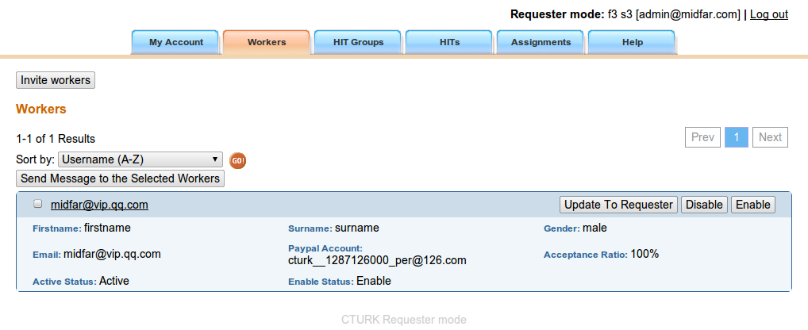
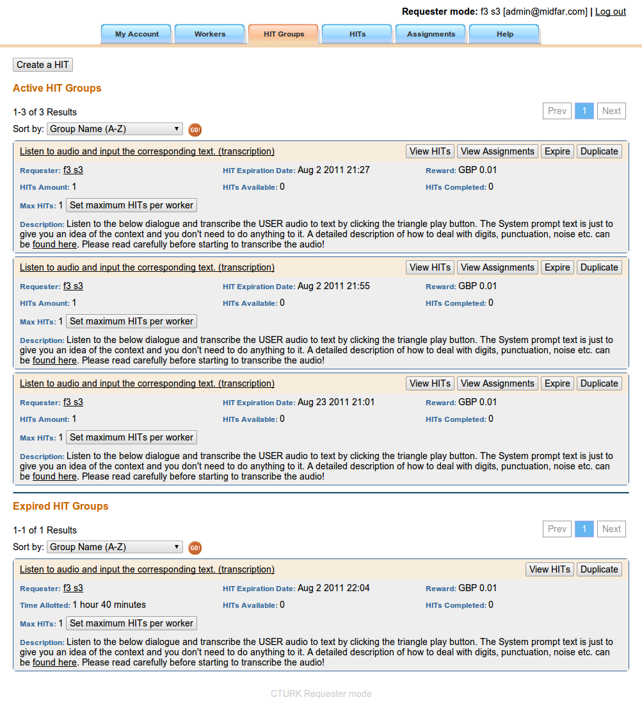
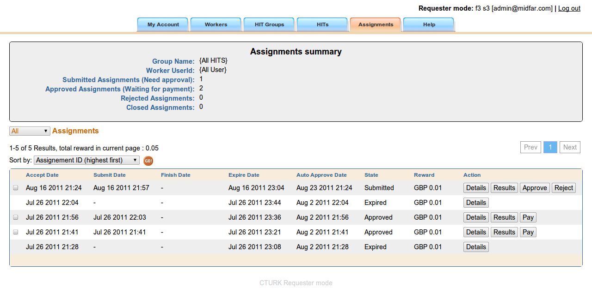

Help
The aim of CTURK is to automate process of conducting experiments with subjects participating in a set of various task, called HITs. For example, a HIT can be an evaluation of spoken dialogue system or transcribing a set of audio recordings.
The main use cases of CTURK are:
- Register subjects
- Let subjects conduct evaluation
- Collect statistics about the executed evaluations
- Pay subjects
In the CTURK framework are two types of users: requesters and workers. The requesters publish work on the CTURK in the form of HITs and pay workers for their successful completion of the HITs. The workers complete the published HITs, wait for their work being accepted and when they earn a minimum amount of money then they can request to be paid.
There are three main concepts in the CTURK:
- a HIT Group - is a set of HITs which have similar properties such as name, description, reward, etc. See below for more details.
- A HIT - is a basic task which can be completed by a worker by doing the requested work and submitting the results.
- Assignment - is a result of a completion, in the CTURK terminology submission. An assignment is either approved or reject by a requester. If the assignment is approved that the worker is awarded the advertised price for the HIT (reward).
The next sections provide basic information on how requesters can correctly and efficiently use the CTURK framework.
Creating an account
As a user who can see this help, you already have an account and you are a requester. However, it will be helpful to review a requesters account can be created. First, a user who wants to be a requester must create a workers account. A workers account can be created here.
When registering, a user must provide:
- User name
- Password
- Paypal account email
- Title
- First name
- Surname
- Gender
- Building name
- Street name
- City name
- Postcode
Second, a the rights of the worker have to raised by another requester.
The upgrade of a worker to requester is performed in the Workers section in the main menu.
For example, you might to see something similar to:

Here you can see a list of all workers in the CTURK. By clicking on the "Update To Requester", you can raise the rights of a worker to requester.
Also, you can disable a worker by clicking on the "Disable" button. This is useful if you do not want a worker to be able to use the CTURK any more. If you change your mind later then you can always enable the disabled user.
The "Invite workers" button can be used to create a link which will enable a user to create a worker account automatically. However, it is easier to email potential workers a link where they can register on their own. The potential workers can register here.
Creating a HIT Group
A HIT Group is a set of HITs which share the same properties such as:
- Name
- Description
- Currency - has to one of the currency codes such as USD, GBP, EUR, .... used by PayPal.
- Reward - is a floating point number.
- Expire date - has the format yyyy/mm/dd HH:MM and sets the date when the published HITs expires. If a HIT expire then will not be available to workers any more.
- Assignment time - time available to a worker for completing the HIT in seconds.
- Auto approval time - a period after which the HIT is approved automatically in seconds.
- Max HITs - a maximum number of HITs that can be submitted by a single worker.
- URL - the URL where the external HITs is placed.
- Frame Height - the allocated size of IFRAME element for the HIT.
These HITs are published by a requester to be completed by one or more workers. Graphical interface for publishing a group of HITs with one HIT is here. However, all external HITs (software such as cturk-transcriber) offers its own way how to publish HITs on the CTURK, e.g. execution of a command in a commandline.
List all HIT Groups
All published HIT Groups can be viewed in the "HIT Groups" section in the main menu.
For example, you might to see something similar to:

The list has two parts: active HIT Groups and and expired HIT Groups.
The active HIT Groups contain all HIT groups which have:
- any HITs that can be completed/submitted by workers
- the HIT group did not automatically expired
- there are some assignments (results submitted by workers) and must be approved or rejected
- there are some assignments which were approved but not paid for
For example, in the picture above the active HIT groups are having either unpaid HITs (assignments) or unapproved or un-rejected HITs.
By clicking on the "View HITs" button, you will see a set of all HITs associated with the HIT Group.
By clicking on the "Assignments" button, you will see a set of all assignments associated with the HIT Group.
By clicking on the "Expire" button, you can expire all HITs within the HIT Group. The expired HITs will not be available to workers for completion. However, after the expired HIT Group can stay among the active HIT Groups as there may be some unpaid, unaccepted, un-rejected HITs associated with the HIT Group.
You can duplicate a HIT Group by clicking on the "Duplicate" button. Before a new HIT Group is saved into the CTURK, you can modify the parameters of the HIT Group.
List all HITs
List of all HITs is displayed in the "HITs" section in the main menu.
It displays all HITs of the current requester. This view is used also for some filtered listings of HITs, e.g. for listing HITs associated with a particular HIT Group.
List all assignments
List of all assignments is displayed in the "Assignments" section in the main menu.
It displays all assignments associated with HITs of the current requester. This view is used also for some filtered listings of assignments, e.g. for listing assignments associated with a particular HIT.
For example, you might to see something similar to:

By clicking on the "Details" button, you will see details of the associated HIT and all assignments associated with that HIT.
By clicking on the "Results" button, you will see an XML document with the data submitted by the worker.
By clicking on the "Approve" button, you approve the assignment and agree that the worker should be paid.
By clicking on the "Reject" button, you reject the assignment and the worker will not be paid.
By clicking on the "Pay" button, you will pay a worker for this individual assignment (completed HIT). However, it is more efficient to wait for the worker's request to be paid. Once a worker request the pay then it can be completed in the "My Account" section in the main menu.
Paying the subject for approved HITs
As suggested above, you can pay individually for each approved HIT. However, this is rather expensive as each payment as involves also a transaction fee. Generally, it is better to wait until the worker requests to be paid and then complete the payment in the "My Account" section in the main menu. You will see all request for payments in the "Requested payments detail" block.
To pay a worker, you will need a valid PayPal account.